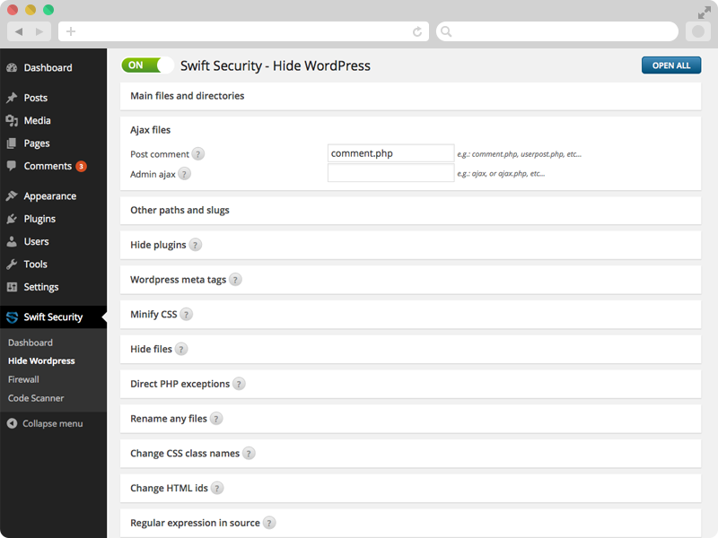

Created: 11/2/2015
By: SWTE
Email: support@swte.ch
Thank you for purchasing our plugin. If you have any questions that are beyond the scope of this help file, please feel free to email us via our user page contact form here.
With the Swift Security plugin you can make your Wordpress website more secure with a single click. A great advantage of the plugin is that you don't need any special technical knowledge.
The plugin consists of three main parts:
Swift Security is compatible with most plugins, however, it would be difficult to test it in combination with all plugins. Should you have any problems with the plugin, do not hesitate to contact us! We believe that one of the most important factors when publishing a plugin, is the continuous support, thus, we strive to reply to all questions within 1-2 hours, but within 24 hours at the latest. Eventual bugs and incompatibilities are fixed according to the followings:
You can secure your site with the following simple steps:
With the Hide Wordpress module you can hide the fact that your website uses WordPress. The Hide Wordpress module will not change the original file structure, it will only hide it. From a security perspective this is extremely useful, because malicious users can exploit known plugin or theme vulnerabilities to hack your WordPress website.
In the Hide Wordpress menu you can rename your original filepath. E.g.: you can rename your wp-content/uploads/ directory to files/ or your wp-admin directory to administrator/. Thus, a malicious user is unable to find the admin URL.
By default, the module blocks the direct PHP script access, thus, a malicious user is unable to determine that you are using WordPress. Without the plugin, by writing yoursite.com/wp-config.php in your browser an empty page will appear, however, you will not receive a 404 file not found error message and the attacker is able to figure it out that you are using WordPress. Certainly, you can provide exceptions, thus, if for whatever reason you need to whitelist a php file, you can do this.
With the Hide Wordpress module you can rename your installed plugins, thus, hiding the fact that you are using Wordpress.
The module enables you to change any text in your HTML, CSS or Javascript source (will not change the original file, only bypass it).
With the Hide Wordpress you can minify your CSS and Javascript files and you can remove comments, thus, it cannot be determined which theme or plugin you are using (will not change the original file, only bypass it).
With the Firewall module you can prevent the most common attack attempts:
In case of vulnerable plugins or themes you can prevent attackers to exploit eventual SQL injection security vulnerabilities.
You can prevent attackers to exploit eventual file path errors (for example a script uses relative paths for reading or writing a file, and the attacker by using ../ characters can reach files for which he shouldn't have permission.
It could happen that you may need to allow users to upload files on your website. In this case, if the file upload is not properly developed, an attacker - in lieu of the originally permitted file formats - can upload scripts, which once executed can obtain data or can take control over your website (and may use your server for sending SPAM).
With the Firewall File upload filter you can prevent an attacker from uploading executable, malicious scripts.
You can easily set the security level of the Firewall with the help of the slider, and if you are an advanced user, you can provide custom settings under the Advanced settings tab.
You can set filters based on IP addresses or specific countries. For example you can set a filter so that the WP admin can only be accessed from the USA. Also, you can block visits from specific countries.
With the help of pushover.net you can get real time updates about actions related to your website: successful login, unsuccessful login, hacking attempts, and receive scan reports from the pre-scheduled Code Scanner.
With the new anti-brute force feature you can protect your site from different brute-force attacks: password hackings, SQL injections or XSS attempts. You can set the maximum number of tolerated attempts. Once this number is reached, the system will automatically block the IP address in question.
The built-in comment spam blocker put all spam comment to the spam folder without captcha
With the help of the Code Scanner you can scan all files and thus you can find all previously uploaded malicious files which were uploaded on your server by an attacker before the installation of the plugin. You can run the Code Scanner automatically at certain time intervals, thus, if an attacker succeeds in uploading a malicious code to your server (e.g. because he gained access to it through the hosting provider or has obtained the FTP or SSH login credentials) you can automatically quarantine these. Also, you will receive a report with the results of the scan.
Besides these, the Code Scanner checks the security of certain basic settings and provides useful advice should it find any problems.
Certainly, it may happen that the Code Scanner gives a false positive alert for a legit file, in this case you can whitelist it, thus, for this file you will no longer receive false positive alerts. The Code Scanner module is continuously updated. You should always download the updated version to avoid false positive alerts.
Once again, thank you so much for purchasing this plugin. As we previously mentioned, we would be glad to help you if you have any questions related to this plugin. If you have a more general question related to the plugin on CodeCanyon, you might consider visiting the forums and asking your question in the "Item Discussion" section.
SWTE